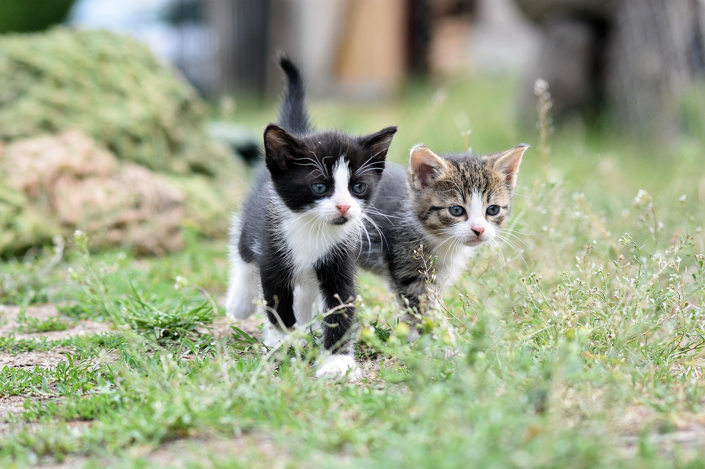

La importancia del control veterinario

Los controles veterinarios permiten revisar el estado general de la mascota y orientar al dueño sobre cuidados preventivos.
Revisar servicios disponibles
Los controles veterinarios permiten revisar el estado general de la mascota y orientar al dueño sobre cuidados preventivos.
Revisar servicios disponibles
La observacion diaria, la higiene y los controles profesionales ayudan a mantener el bienestar de los gatos.
Enviar una consulta